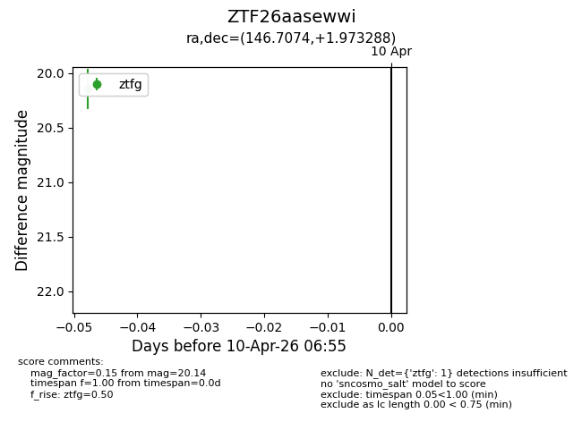
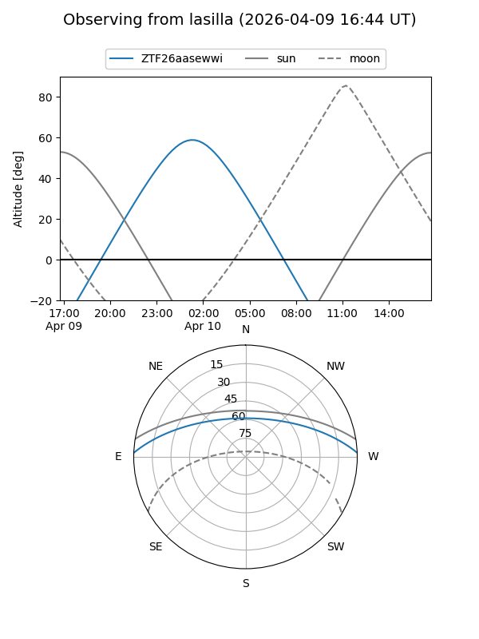
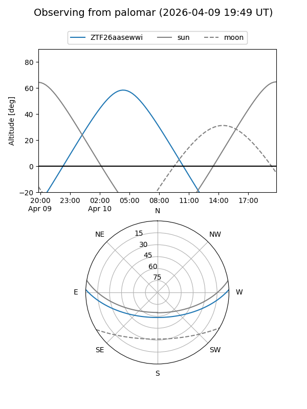

ZTF26aasewwi
Target ZTF26aasewwi at 2026-04-10 07:06
Aliases and brokers:
FINK: link
Lasair: link
ALeRCE: link
alt names
ZTF26aasewwi (ztf,fink_ztf)
Coordinates:
equatorial (ra, dec) = 146.7074,+1.97329
equatorial (HMS+DMS) = 09:46:49.78,+01:58:23.84
galactic (l, b) = (234.5101,+39.18838)
Flags:
Photometry:
last ztfg=20.14
1 ztfg detections
Lightcurve

Visibility


Additional plots